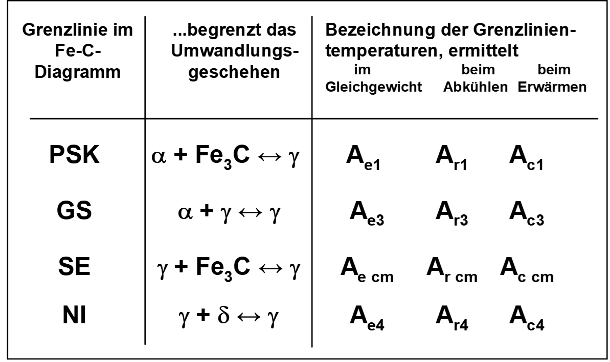

Zustandsdiagramme
https://studyflix.de/chemie/eisen-kohlenstoff-diagramm-1539
- auch Phasendiagramm -phase diagram-
- stellt den Zustand von Legierungen und Stoffgemischen in Abhängigkeit von der chemischen Zusammensetzung, Temperatur und ggf. dem Druck dar
- Zustand meint die auftretenden Phasen (alle festen, flüssige, gasförmige)
Achtung!
Zustandsdiagramme sind Gleichgewichtsdiagramme. Sie haben nur Gültigkeit bei einer sehr lang-samen Abkühlung aus dem schmelzflüssigen Zustand bis hin zur Raumtemperatur, bei der sich das Gleichgewicht zwischen den Phasen (an bzw. zwischen den Phasengrenzlinien) einstellen kann.


Löslichkeiten
<details> <summary>Unlöslich</summary> <div>
- zu große Unterschiede bei den Atomdurchmessern
- Kristallgitter weichen voneinander ab
- Komponenten sind chemisch sehr unterschiedlich
</div> </details>
<details> <summary>Löslich</summary> <div>
- kaum Unterschiede bei den Atomdurchmessern
- Kristallgitter sind identisch
- Komponenten sind chemisch sehr nah beieinander
</div> </details>
- Die Phasen bzw. Phasengrenzlinien können als ein Zustandsdiagramm dargestellt werden
- Die Anzahl der miteinander im Gleichgewicht stehenden Phasen ist gesetzmäßig verknüpft mit der Zahl der an der Legierungsbildung beteiligten Komponenten und der Zahl der Freiheitsgrade über die Gibbsche Phasenregel
- Ein Freiheitsgrad beinhaltet die mögliche Veränderung von Zustandsvariablen, ohne das Gleichgewicht, d.h. die Anzahl der Phasen, zu ändern
- Die Anzahl der frei wählbaren Zustandsvariablen wird nach der Phasenregel bestimmt
Gibbsche Phasenregel
\[F = n - P + 2\]
(für Gase und Flüssigkeiten) F = Anzahl der Freiheitsgrade; n = Anzahl der Komponenten; P = Anzahl der Phasen
bei konstantem Druck (feste Stoffe)
\[F = n - P + 1\]
Damit ergibt sich für die Anwendung dieser Gesetzmäßigkeiten bei der Abkühlungs- und Erwär-mungskurve für metallische Systeme
F = 0 ein Haltepunkt und F = 1 ein Knickpunkt.


Eutektischer Entmischung
- Komponenten sind löslich im flüssigen Zustand
- Komponenten sind unlöslich im festen Zustand

Eutektische Reaktion
- bei einer Konzentration erstarren aus der Schmelze S bei konstanter Temperatur (Eutektikale) A- und B-Kristalle zu einem feinkristallinen Kristallgemisch (Eutektikum)
- eutektische Gefüge besitzt oft eine schicht- oder lamellenartige Struktur
- Legierungen anderer Konzentrationen scheiden vor Erreichen der Eutektikale (Haltepunkt bei der Eutektischen Reaktion) die überwiegende Komponente aus (A- oder B-Kristalle), so dass sich die Konzentration der verbleibenden Schmelze der eutektischen Zusammensetzung annähert.
- die Eutektikale bildet die Soliduslinie des gesamten Systems
System mit Mischungslücken
- Komponenten sind löslich im flüssigen Zustand
- Komponenten sind begrenzt löslich im festen Zustand

Löslichkeits- oder Sättigungslinien
- Linien, die die Einphasengebiete ($\alpha$, $\beta$) von dem Gebiet der Kristallgemische aus Mischkristallen ($\alpha+\beta$) abgrenzen
Sonderfall:
- ein System von Mischkristallen bilden Einlagerungsmischkristalle
- Die Konzentrationsachse endet dann mit der Konzentration der Sättigung der Komponente B im Gitter der Komponente A
- Das Einphasengebiet der Komponente B kann dann nicht existieren.
Systeme mit Peritektikum (mit peritektischer Entmischung)
- weit auseinander liegende Schmelz-/Erstarrungstemperaturen der beteiligten Komponenten sind charakteristisch.
- Bei Abkühlung aus der Schmelze bildet sich ein Mischkristall $\alpha$
- bildet bei konstanter Temperatur (entsprechend der Eutektikalen) mit der Schmelze reagierend eine zweite Mischkristallart $\beta$ bildet.
- bei einer peritektischen Reak-tion entstehen aus der Schmelze und bereits ausgeschiedenen $\alpha$-Mischkristallen bei gleich bleibender Temperatur neue $\beta$-Mischkristalle.

Realdiagramme
- die bisherigen Digramme waren Idealdigramme und treten so nicht wirklich auf
- Eisen-Kohlenstoff-Diagramm (EKD) ist das wichtigste Realdiagramm
- Grundmetall ist Eisen -> Stahl oder Eisenguss
- das EKD setzt sich aus den Idealdiagrammen - dem peritektischen, eutektischen und eutektoiden Teildiagramm - zusammen
- Man kann je nach Erscheinungsform des Kohlenstoffs zwischen dem stabilen System Fe-C, in dem Kohlenstoff als Graphit, und dem metastabilen System Fe-Fe3C, in dem Kohlenstoff gebunden als Fe3C (intermediäre Phase Zementit) vorliegt, unterscheiden.
- Stabil bedeutet, dass der Kohlenstoff in Form von Graphit nicht weiter zerlegt werden kann, Fe3C aber bei langzeitigem Glühen in Eisen und Temperkohle zerfällt.
- Das metastabile Sys-tem stellt gewissermaßen ein relatives Minimum der Gesamtenergie des Systems dar. Für techni-sche Belange kann es als „hinreichend stabil“ bewertet werden.
Eisen Kohlenstoff Diagramm (EKD)
- wichtigstes ZSD
- Eisenist der wichtigste Werkstoff im Maschinenbau.
Gründe sind
- geringe Kosten
- hohe Festigkeit und elastische Steifigkeit
- Vielzahl von möglichen Legierungen
- Verfügbarkeit
- Gießbarkeit, Schweißbarkeit, etc.
Erklärvideo für das Eisen Kohlenstoff Diagramm


Wichtige Gleichgewichtslinien
ABCD Liquiduslinie AHIECF Soliduslinie ECF Eutektikale PSK Eutektoide ES, PQ Sättigungslinien MOSK Curie-Linie QPSECD Bildung/Auflösung Fe3C
Punkte im Zustandsdiagramm
S - eutektoider Punkt C - eutektischer Punkt G - $\alpha$ / $\gamma$ - Umwandlungspunkt des reinen Eisens E - Punkt max. C-Löslichkeit im $\alpha$ - MK P - Punkt max. C-Löslichkeit im $\gamma$ - MK u. a. m. (vgl. Fe-Fe3C - Diagramm)
Folgende Grenzlinientemperaturen (Umwandlungstemperaturen) werden benutzt:
A: arreter (anhalten) r: refroidir (abkühlen) c: chauffer (erwärmen) e: équilibre (Gleichgewicht)
Ac1: 723°C Ac3: abhängig vom C-Gehalt

Phasen- und Gefüge im System-Eisen-Kohlenstoff
Mischkristalle
$\alpha$-Mischkristall (krz)
- Gefügebezeichnung Ferrit ($\alpha$-Ferrit)
- rein ferritisches Gefüge besitzt geringe Härte/Festigkeit, aber hohe Duktilität (Zähigkeit)
- Max. C-Löslichkeit: nur 0,02 %

Exkurs Härte / Festigkeit
Im Detail kommt das später. Festigkeit
- Maß der maximalen Beanspruchbarkeit bis Versagen
- Kraft pro Querschnittsfläche
Härte
- mechanischer Widerstand gegen mechanisches Eindringung eines anderen Körpers
- Maß für die Verschleißbeständigkeit
$\delta$-Mischkristall (krz)
\[\delta\]
-Ferrit ist nur oberhalb von 1392°C stabil- technisch von untergeordneter Bedeutung
- Max. C-Löslichkeit: 0.12 %
$\gamma$-Mischkristall (kfz)
- Gefügebezeichnung Austenit
- scheidet sich oberhalb der G-S-E-Linie aus;
- durch Legierungszusätze (Ni, Mn) und Abschrecken auch bei Raumtemperatur beständig (austenitische Stähle)
- unmagnetisch, zäh und durch Kaltverfestigung härtbar (Mangan-, Nickel-, Chrom-Nickel-Stähle)
- hohe Warmfestigkeit, gute Korrosions- und Zunderbeständigkeit
- Max. C-Löslichkeit: 2.06 %
Intermediäre Phase
Zementit (Eisencarbid Fe3C); 6.67 Masse-% C-Gehalt
- Primärzementit:
primäre Kristallisation aus der Schmelze (Linie CD)
- Sekundärzementit:
Ausscheidung aus dem Austenit (Linie ES)
- Tertiärzementit:
Ausscheidung aus dem Ferrit (Linie PQ)
Kristallstruktur

orthorhombischen Elementarzelle
- zwölf Eisen- und vier Kohlenstoffatome
- die Kohlenstoffatome sind relativ unregelmäßig (zweifach überkappt trigonal-prismatisch) von acht Eisenatomen umgeben
Zementit ist hart und spröde
überwiegende Zahl der technischen Eisen-Kohlenstoff-Legierungen erstarrt unter Bildung von Zementit
Eisen-Kohlenstoff-Legierungbezeichnungen
| Kohlenstoffgehalt (Masse-%) | Bezeichnung | Typ |
|---|---|---|
| 0.02 < C < 0.8 | (Kohlenstoff-) Stahl | untereutektoide Stähle |
| C = 0.8 | (Kohlenstoff-) Stahl | eutektoide Stähle |
| 0.8 < C < 2.06 | (Kohlenstoff-) Stahl | übereutektoide Stähle |
| 2.06 < C < 4.3 | Gusseisen | untereutektische Gusseisen |
| C = 4.3 | Gusseisen | eutektische Gusseisen |
| 4.3 < C < 6.67 | Gusseisen | übereutektische Gusseisen |

Weiterhin wird unterschieden zwischen dem schwarzen Gusseisen (Grauguss), in dem der über-schüssige Kohlenstoff in Form von Graphit, und dem weißen Gusseisen, in dem der Kohlenstoff in Form von Zementit vorkommt.